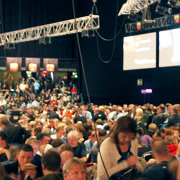

Om JavaZone

På disse sidene finner du informasjon om alt som rører seg rundt JavaZone. Her får du svar på alt mulig; hva JavaZone er, hvordan du kan booke deg inn på hotell, møtesteder og arrangementer under konferansen, hvordan du kan bli kjent med andre deltakere, og hvordan du kan bidra som crew. Du kan også lese nettsider fra tidligere år og få et inntrykk av stemningen. JavaZone er mer enn en konferanse. JavaZone er et sted der mennesker møtes, knytter kontakt, og har glede av hverandres selskap.
Hva er JavaZone
JavaZone er Nordens største og en av Europas viktigste møtesteder for programutviklere. JavaZone blir betegnet som en høykvalitets, uavhengig konferanse, og er et forum for kunnskapsformidling, rekruttering og profilering. Et 40-talls store og mellomstore bedrifter - partnere - stiller ut sine produkter og tjenester på et eget standområde, mens det i konferansefasilitetene gjennomføres over 90 foredrag. Hvert år selges det rundt 2300 billetter til konferansen. Dette betyr at vi i de to dagene konferansen pågår gjennomfører mer enn 200.000 kompetansetimer. Tar man i betraktning de mange uformelle diskusjonene som foregår på stands og mellom enkeltdeltakere, er JavaZone en gigantisk arena for kunnskapsoverføring. Det sier seg selv at en konferanse som rommer så mange utviklere også er en viktig arena for rekruttering. Gjennom utstillingene og andre aktiviteter benytter store og mellomstore selskaper anledningen til å profilere seg og rekruttere nye medarbeidere.
En av de viktigste grunnene til at JavaZone har hatt så stor suksess er de mange frivillige som står bak. Man kan trygt si at dette er en konferanse av og for programutviklere. Hvert år nedlegges det tusenvis av timer for at konferansen skal bli så vellykket som mulig. Det faglige programmet er nøye strukturert og planlagt, og programkomiteen henter inn foredragsholdere fra hele verden. Fagfolk vet hva fagfolk vil ha, derfor er speakerne håndplukket og foredragene så relevante som de går an å bli. Det hører også med til historien at foreleserne heller ikke mottar honorar for sin innsats. Rundt halvparten av foredragene holdes på engelsk, mens den andre halvparten av forelesningene skjer på skandinavisk. Konferansens ukonvensjonelle og ukommersielle tilsnitt har også bidratt til dens popularitet.
Nordens største utviklerkonferanse